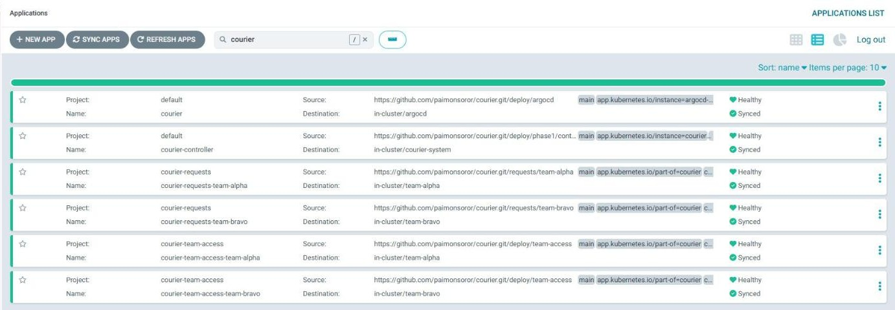
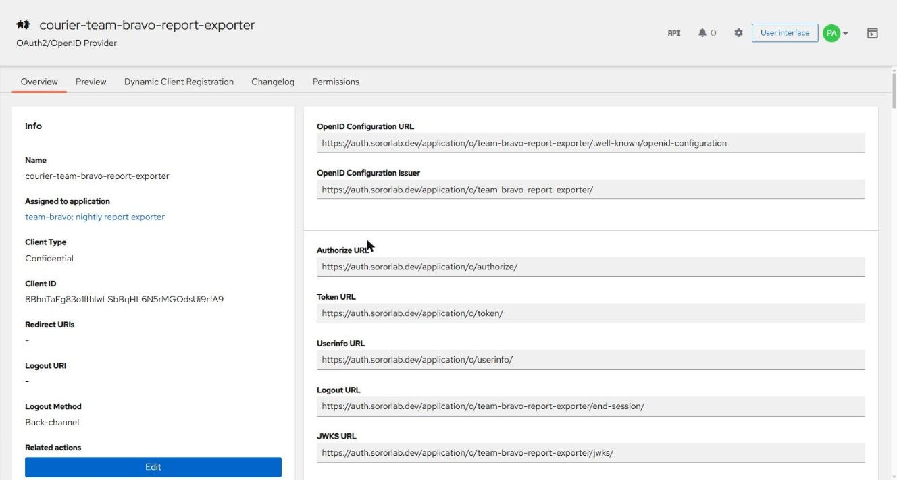
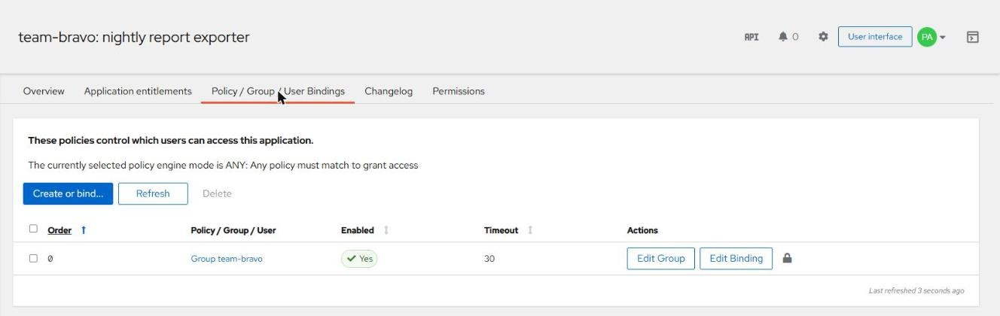
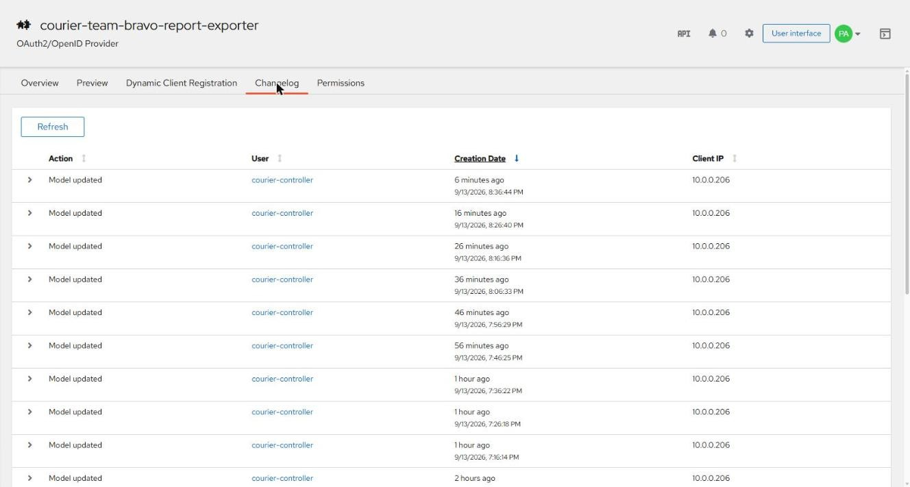
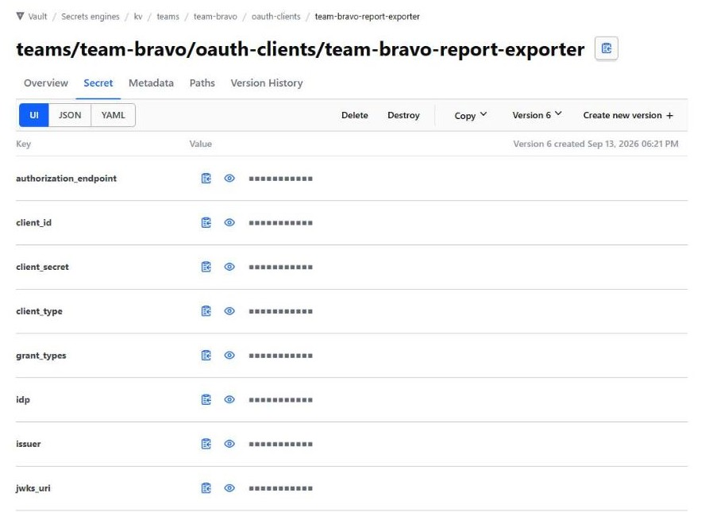
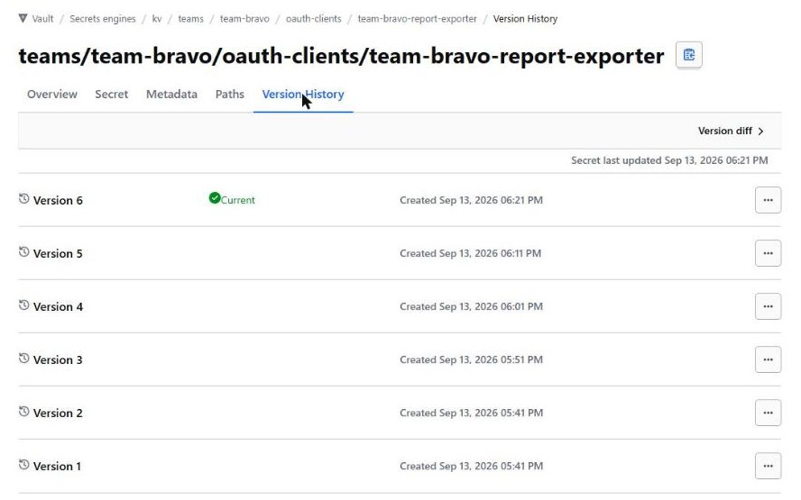

What pull request #1 did for team-bravo
The proof of value asked one question: can a team get a working OAuth client, with its secret delivered only to that team, from nothing more than a reviewed file? This page answers it with the records of every system involved. Every value below was read back from GitHub, ArgoCD, Kubernetes, Authentik and Vault after the run; the secret itself appears only as "present, 64 characters".
For the step-by-step verification of the same run, see the walkthrough.
What we wanted
team-bravo runs a nightly report exporter: a job with no user present that calls internal APIs as itself. That is an OAuth client credentials client, which means a real secret.
Outcome
A confidential client the job can use to get access tokens from Authentik.
Constraint
No person hands over the secret, and only team-bravo can read it. Other teams must be refused even with valid identities.
Governance
A client that acts as itself is higher risk, so it needs explicit security approval before it exists.
What the pull request contained
One commit (976f8ce), one new file, 14 lines, on branch request/team-bravo-report-exporter:
# requests/team-bravo/report-exporter.yaml
apiVersion: courier.sororlab.dev/v1alpha1
kind: OAuthClient
metadata:
name: report-exporter
namespace: team-bravo
spec:
displayName: "team-bravo: nightly report exporter"
clientType: confidential
grantTypes:
- client_credentials
scopes:
- openid
- profile
- groupsWhat the file says
- The owner is team-bravo, because the file lives in
requests/team-bravo/ - A confidential client using client credentials
- Tokens carry identity and group claims
What the PR did not need
- A ticket, email or chat with the identity team
- Access to the Authentik or Vault consoles
- Kubernetes manifests, namespaces or infrastructure changes
- A secret, anywhere
Review: the policy check failed until the security-approved label was added (20:51:53), then passed (20:53:29). The PR merged at 21:40:39 as de172bd. Details in the walkthrough.
What happened on merge
Assembled from five independent records: ArgoCD's sync history, Kubernetes object timestamps, the controller's status, Authentik's event log and Vault's audit log.
- 21:40:39 · GitHub
PR #1 merged into
mainasde172bd. - 21:41:38 · ArgoCD
ApplicationSet
courier-requestsgenerated Applicationcourier-requests-team-bravofor the new directory and started syncing. Namespaceteam-bravowas created. - 21:41:40 · Kubernetes
OAuthClient team-bravo/report-exportercreated (generation 1). Sync finished: successfully synced (all tasks run). - 21:41:41 · Vault
Controller identity
kubernetes-courier-system-courier-controller-manager(policycourier) created version 1 of the credentials entry: the new secret,state: pending. - 21:41:42 · Authentik
User
courier-controllercreated OAuth2 providercourier-team-bravo-report-exporterwith that secret, plus its application and a binding to groupteam-bravo. - 21:41:45 · Vault
Same controller identity patched the entry to version 2:
state: active,client_idand endpoints. The secret was not read or resent. - 21:41:45 · Kubernetes
OAuthClient condition
Ready=True, reasonDelivered. - 21:42:24 · Vault
Access check:
jwt-courier-svc-alpha(team-alpha) denied;jwt-courier-svc-bravo(team-bravo) read ok.
Vault's audit log shows the secret stored at 21:41:41; Authentik's event log shows the client that uses it created at 21:41:42. Two systems that do not share a clock source or a log agree that the secret was safely stored before it became live.
What was created, platform by platform
The team-bravo identity group, its vault policy and identity groups, and the test service account existed before the PR; they are part of onboarding a team. Everything listed below under ArgoCD, Kubernetes, Authentik and the vault entry was created by merging this one file.
GitHub
| Object | Value |
|---|---|
| Pull request | #1 request: team-bravo report-exporter (client_credentials), 1 commit, 1 file |
| Label | security-approved, added 20:53:08 |
Check runs on 976f8ce | Validate requests: failure 20:51:53, success 20:53:29 |
| Merge commit | de172bd at 21:40:39; head branch deleted 21:40:47 |
| Durable record | The request file on main is now the source of truth for this client |

ArgoCD
| Field | Value |
|---|---|
| Application | courier-requests-team-bravo, created 21:41:38 |
| Owned by | ApplicationSet courier-requests (generated, not hand-made) |
| Project | courier-requests: only OAuthClient objects, only team-* namespaces |
| Source | github.com/paimonsoror/courier, path requests/team-bravo, files *.yaml, revision main |
| Destination | namespace team-bravo |
| Sync policy | automated, prune, self-heal, CreateNamespace=true |
| Manages | 1 resource: courier.sororlab.dev/OAuthClient team-bravo/report-exporter, Synced |
| First sync | revision de172bd, deployed 21:41:40; status Synced, Healthy |

report-exporter OAuthClient; last sync from the pull request #1 merge.
Kubernetes
| Object | Details |
|---|---|
Namespace team-bravo | Created 21:41:38 by ArgoCD |
OAuthClient report-exporter | Created 21:41:40; finalizer courier.sororlab.dev/cleanup; label app.kubernetes.io/instance=courier-requests-team-bravo |
OAuthClient status
clientId: 8BhnTaEg83o1lfhlwLSbBqHL6N5rMGOdsUi9rfA9
credentialsDelivered: true
identityProvider: authentik
lastSecretIssued: 2026-09-13T21:41:45Z
observedGeneration: 1
secretPath: kv/teams/team-bravo/oauth-clients/team-bravo-report-exporter
conditions:
- Ready=True reason=Delivered since 21:41:45
"credentials are available at kv/teams/team-bravo/oauth-clients/team-bravo-report-exporter"Nothing else was created in the namespace: no Secret, no workload. The only other objects are the ones Kubernetes adds to every namespace (ServiceAccount default, ConfigMap kube-root-ca.crt).
Authentik
OAuth2 provider (pk 12)
| Setting | Value | Why |
|---|---|---|
| name | courier-team-bravo-report-exporter | Courier's naming, courier-<team>-<name> |
| client_type | confidential | From the request |
| client_id | 8BhnTaEg83o1lfhlwLSbBqHL6N5rMGOdsUi9rfA9 | Generated by Authentik; not sensitive |
| client_secret | present, 64 chars | Generated by Courier; same value as in the vault |
| grant_types | client_credentials only | Authentik rejects any grant not listed |
| redirect_uris | none | No browser sign-in for a machine client |
| property_mappings | OpenID openid, OpenID profile, oauth-groups | The three requested scopes |
| sub_mode | user_email | Courier default |
| include_claims_in_id_token | true | Groups available to relying parties |
| access / refresh token validity | hours=1 / days=30 | Authentik defaults |
| authorization flow | default-provider-authorization-implicit-consent | Courier default |
| signing key | authentik Self-signed Certificate | Courier default |

Application and access
| Object | Value |
|---|---|
| Application | name team-bravo: nightly report exporter, slug team-bravo-report-exporter, provider 12 |
| Ownership marker | meta_description: managed-by: courier; owner: team-bravo |
| Policy binding | group team-bravo, order 0, enabled; policy engine mode any |
| Issuer | https://auth.sororlab.dev/application/o/team-bravo-report-exporter/ |

team-bravo, created by Courier from the request's owner.Authentik event log for this client
21:41:42 model_created by courier-controller oauth2provider courier-team-bravo-report-exporter
21:51:48 model_updated by courier-controller oauth2provider courier-team-bravo-report-exporter
21:51:48 model_updated by courier-controller application team-bravo: nightly report exporter
22:01:51 model_updated by courier-controller oauth2provider courier-team-bravo-report-exporter
22:01:52 model_updated by courier-controller application team-bravo: nightly report exporterEvery change is attributed to the scoped courier-controller account, not to an administrator. The updates every ten minutes are the controller's routine drift repair, discussed below.

courier-controller. The steady ten-minute updates are IdP drift repair; the vault side of this churn was fixed, and quieting these entries is on the roadmap.Vault
The credentials entry
Path kv/teams/team-bravo/oauth-clients/team-bravo-report-exporter
| Key | Value |
|---|---|
client_id | 8BhnTaEg83o1lfhlwLSbBqHL6N5rMGOdsUi9rfA9 |
client_secret | present, 64 chars |
client_type | confidential |
grant_types | client_credentials |
scopes | openid profile groups |
issuer | https://auth.sororlab.dev/application/o/team-bravo-report-exporter/ |
token_endpoint | https://auth.sororlab.dev/application/o/token/ |
authorization_endpoint | https://auth.sororlab.dev/application/o/authorize/ |
jwks_uri | https://auth.sororlab.dev/application/o/team-bravo-report-exporter/jwks/ |
userinfo_endpoint | https://auth.sororlab.dev/application/o/userinfo/ |
owner_group | team-bravo |
idp / managed_by | authentik / courier-controller |
state | active |

Who can read it
# policy team-bravo
path "kv/data/teams/team-bravo/*" { capabilities = ["read"] }
path "kv/metadata/teams/team-bravo/*" { capabilities = ["read", "list"] }
path "kv/metadata/teams/team-bravo" { capabilities = ["list"] }
# granted through identity groups mapped from the IdP group team-bravo
identity group team-bravo alias team-bravo on oidc/ → policy team-bravo # people
identity group team-bravo-jwt alias team-bravo on jwt/ → policy team-bravo # workloadsVault audit log for this path
| Time | Operation | Identity | Policies | Result |
|---|---|---|---|---|
21:41:41 | create | kubernetes-courier-system-courier-controller-manager | courier | ok v1, pending |
21:41:45 | patch | kubernetes-courier-system-courier-controller-manager | courier | ok v2, active |
21:42:24 | read | jwt-courier-svc-alpha | default, team-alpha | permission denied |
21:42:24 | read | jwt-courier-svc-bravo | default, team-bravo | ok |
21:44:09 | read metadata | oidc-paimon.soror@gmail.com | default, team-alpha, vault-admin | ok administrator browsing the UI |
21:51:49 | patch | kubernetes-courier-system-courier-controller-manager | courier | ok v3, resync |
22:01:52 | patch | kubernetes-courier-system-courier-controller-manager | courier | ok v4, resync |
Three things stand out. The controller never reads the entry; it only creates and patches. The only successful data read is team-bravo's. And an administrator's access is recorded like anyone else's, which is why the broad vault-admin policy is on the hardening checklist.
What team-bravo can do now
Can
- People in the team-bravo group sign in with
vault login -method=oidcand read the credentials - Workloads with a team-bravo identity log in to Vault (
jwt/, rolemachine) and read them at start-up - Exchange them for access tokens at the token endpoint (
client_credentials, valid 1 hour). Authentik accepts the stored secret (HTTP 200 at the revocation endpoint) and rejects a wrong one (HTTP 401); see the correction in the walkthrough for why a token alone is not proof - Change the client (scopes, display name, groups) with a pull request; the secret stays the same
- Retire it with a pull request; the client is deleted and the secret destroyed
- See status in ArgoCD (
courier-requests-team-bravo) or withkubectl -n team-bravo get oauthclients
Cannot
- Find the secret anywhere but Vault: not in Git, CI, ArgoCD, Kubernetes status or logs
- Let another team read it; team-alpha was refused with a valid identity
- Request a client under another team's name or vault path
- Add a high-risk grant without the
security-approvedlabel - Edit the client in Authentik out of band and have it stick; the controller restores the requested settings
Added since: two ready-made ways to consume
| Capability | What team-bravo gets | Verified |
|---|---|---|
| Vault connection in its namespace | ServiceAccount courier-secrets and SecretStore courier-vault, created automatically by ArgoCD application courier-team-access-team-bravo | Ready |
| External Secrets sync | ExternalSecret report-exporter-oauth produces a Secret with all 14 fields; Authentik accepts the synced secret | 22:19:44 vault read ok |
| Python sample | read_credentials(vault_client(), "team-bravo", "report-exporter") as the workload's own identity, then a one-hour bearer token | passed |
| Isolation from other teams | team-alpha's store and team-alpha's workload are both refused on this path | permission denied in the vault audit log |
Details and full output: Use your credentials.
After delivery
Every ten minutes the controller re-applies each ready request. The records show exactly what that did:
- Authentik: provider and application
model_updatedat21:51and22:01. This is intended: it restores any settings changed by hand in the console. Because nothing had changed, the updates were no-ops, though they add entries to the event log. - Vault: patches at
21:51:49and22:01:52created versions 3 and 4 with identical content. This was not intended.
Each KV v2 write creates a new version, and each version retains a copy of the secret, so the periodic resync was producing a new version of unchanged credentials every ten minutes. The controller now rewrites vault metadata only when the request itself changes (its generation differs from the last reconciled one). IdP drift repair is unchanged. Comparing IdP settings before writing, to quiet the Authentik event log, is planned with drift detection.
The vault's own version history confirms the fix. Versions 1 and 2 are the delivery (pending, then active). Versions 3 to 6 are resyncs, exactly ten minutes apart. The fixed controller rolled out at about 22:27 UTC, and no version has been written since.

Reproduce the inventory
Every table on this page came from one script, run after the merge:
deploy/phase2/inventory.sh team-bravo report-exporterIt reads each platform directly: the namespace and OAuthClient; the ArgoCD application and sync history; the Authentik provider, application, bindings and event log; and the Vault entry metadata, fields (secret shown only as present with its length), access policy, identity groups and audit log.